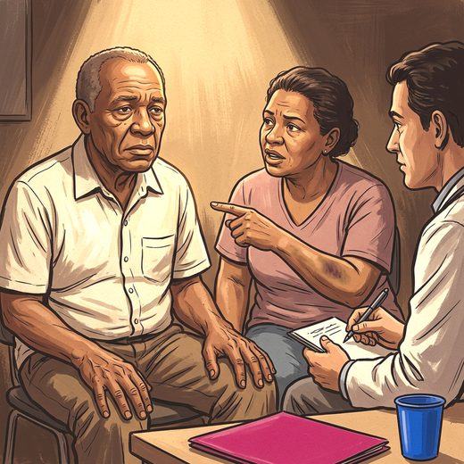

Consulta rápida à beira do leito
Condutas, doses e interações.
Referências da aula · 9
- Riemann D, Espie CA, Altena E, et al. The European Insomnia Guideline: an update on the diagnosis and treatment of insomnia 2023. J Sleep Res. 2023;32(6):e14035. PMID 38016484. doi:10.1111/jsr.14035.PubMedDOI
- American Academy of Sleep Medicine. International Classification of Sleep Disorders, 3rd ed., text revision (ICSD-3-TR). Darien, IL: AASM; 2023.
- American Psychiatric Association. Diagnostic and Statistical Manual of Mental Disorders, Fifth Edition, Text Revision (DSM-5-TR). Washington, DC: APA; 2022.
- Johns MW. A new method for measuring daytime sleepiness: the Epworth sleepiness scale. Sleep. 1991;14(6):540-5. PMID 1798888. doi:10.1093/sleep/14.6.540.PubMedDOI
- Postuma RB, Iranzo A, Hu M, et al. Risk and predictors of dementia and parkinsonism in idiopathic REM sleep behaviour disorder: a multicentre study. Brain. 2019;142(3):744-59. PMID 30789229. doi:10.1093/brain/awz030.PubMedDOI
- Howell M, Avidan AY, Foldvary-Schaefer N, et al. Management of REM sleep behavior disorder: an American Academy of Sleep Medicine clinical practice guideline. J Clin Sleep Med. 2023;19(4):759-68. PMID 36515157. doi:10.5664/jcsm.10424.PubMedDOI
- Allen RP, Picchietti DL, Garcia-Borreguero D, et al. Restless legs syndrome/Willis-Ekbom disease diagnostic criteria: updated IRLSSG consensus criteria. Sleep Med. 2014;15(8):860-73. PMID 25023924. doi:10.1016/j.sleep.2014.03.025.PubMedDOI
- Winkelman JW, Berkowski JA, DelRosso LM, et al. Treatment of restless legs syndrome and periodic limb movement disorder: an American Academy of Sleep Medicine clinical practice guideline. J Clin Sleep Med. 2025. PMID 39324694. doi:10.5664/jcsm.11390.PubMedDOI
- 2023 American Geriatrics Society Beers Criteria® Update Expert Panel. J Am Geriatr Soc. 2023;71(7):2052-81. PMID 37139824. doi:10.1111/jgs.18372.PubMedDOI